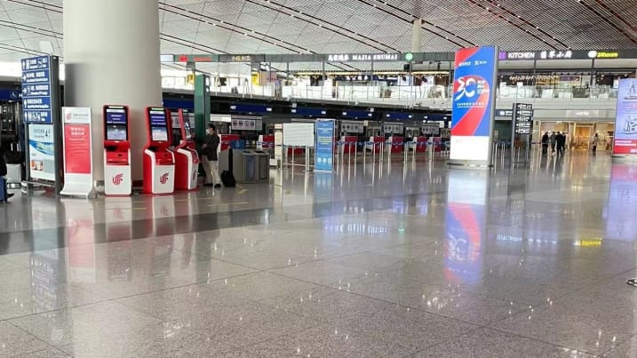

Evelyn Cheng (@Chengevelyn)
BEIJING — About half the flights to and from Beijing’s two airports were canceled Tuesday as the capital tightened travel restrictions after a trickle of new cases in the city and other parts of the country in the last few days.
That’s according to aviation industry data site VariFlight, which tracks about 800 to 1,000 flights each for Beijing Capital International Airport and Beijing Daxing International Airport.
China has a strict “zero tolerance” policy for controlling the coronavirus.
Local authorities, especially in the capital city, are on high alert after a handful of locally transmitted coronavirus cases over the weekend indicated the latest spike in cases might be spreading beyond just a few regions. To be clear, the numbers pale in comparison to most major cities in the world.
Beijing’s health commission announced Monday that residents who left the city for business trips or leisure trips to areas with confirmed cases should “postpone” returning and stay where they are, according to a CNBC translation of the Chinese text. Residents should avoid leaving the city unless necessary, the commission said.
The official announcement followed anecdotes on Chinese social media over the weekend of people who weren’t able to book travel back into the capital city. It was not clear how many people were affected.
Shanghai Disneyland abruptly closed entry to new visitors on Sunday, Halloween, and more than 33,000 people who had been to the park since Saturday were tested for the virus. None tested positive, according to the city.
Critically for Beijing, the city is set to hold a high-level political gathering next week, and is gearing up to host the Winter Olympics in February.
Airport personnel contacted by CNBC said people coming from a city or county where a confirmed coronavirus case has been found cannot enter Beijing. Those coming from areas with no Covid cases need to present Covid test results from the last 48 hours and monitor their health for 14 days after entering the city.
 Beijing Capital International Airport’s Terminal 3 stands far emptier than usual on the afternoon of Tuesday, Nov. 2, 2021.China’s “zero tolerance” policy for Covid-19 means all travelers from overseas are required to undergo quarantines in designated hotels upon arrival in the country. For those wanting to enter Beijing, they must first complete a 21-day quarantine in other cities, the airport personnel said.
Mainland China reported 54 new locally transmitted cases for Monday, bringing the total number of current cases to just over 900, according to the National Health Commission. Beijing city reported 4 additional Covid-19 cases as of Tuesday morning.
Those figures are far smaller than those reported in other countries such as the U.S., with a daily coronavirus case count of over 80,000.
The highly contagious virus first emerged in China in late 2019. The country managed to contain the nationwide spread of the virus by the start of the second quarter last year, and has seen almost no deaths from the virus since the initial outbreak.